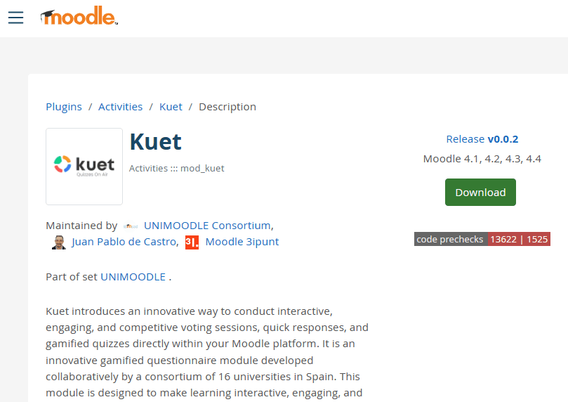
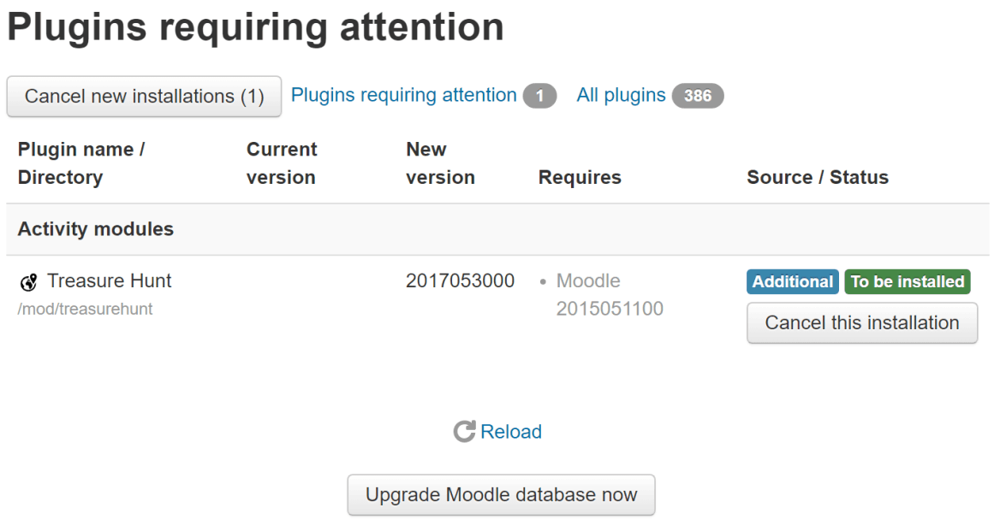

Choose the KUET branch that matches your campus Moodle version before downloading the plugin.
KUET does not yet support Moodle 5.0 because of the changes to the question bank system. Do not install these branches on Moodle 5.0.
Compatibility with Moodle 4.2 has been confirmed through testing, although the installation requirements declared in the reviewed branches do not yet reflect it.
Check the PHP and server requirements for your Moodle version. Scheduled sessions work without a WebSocket; manual sessions need a WebSocket server accessible over WSS.
Download the ZIP of the branch compatible with your Moodle version using the links above. You can also check the Moodle plugins directory and GitHub releases, always checking the compatibility of the selected package.
kuet and place it inside Moodle’s mod directory.
Installation creates the module’s database tables, capabilities, services, events and caches. Keep Moodle cron running: mod_kuet\task\active_session_management manages scheduled session start and end times and runs every minute by default.
Configure the WebSocket and permissions and run the connection test before hosting manual sessions. Then create an activity and prepare its first session.

In Site administration → Plugins → Plugins overview (/admin/plugins.php), find KUET and select Uninstall. This removes the module’s tables and their data.